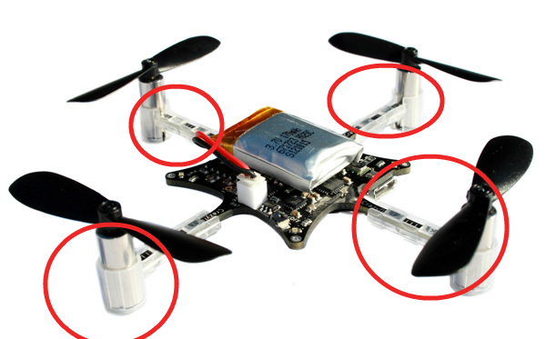
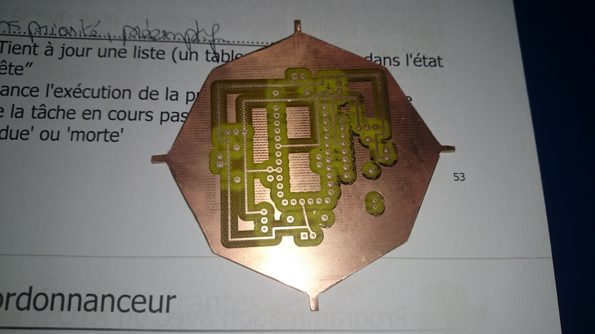

Njord Project
Build an awesome drone from scratch
External support
Now we have received every components and developed each library we have to assemble everything. However, because our school does not have nor 3D printer nor necessary equipment for realization of a circuit, we searched external help. The goal of this article is to present who helped us and what we got from them.
Motors attachments
Because we decided to use same motors as Crazyflie ones, we are roughly constraint to use the same attachment system. That fixation is a small plastic piece with a piped form. Indeed, four branches come from the circuit, and fixations will fit them. Then, motors can fit the other tip of fixation.
Those pieces are not available for purchase, but Bitcraze supplies, on its GitHub repository, a file which models the fixation. Therefore, it is possible to print it in 3D. However, as explained above, because our school does not have any 3D printer we had to search a way to print it.
In December 2014, our school has hosted the annual robotic competition, Robafis. During this competition some companies were exposing their products (related to robotic). Especially, Polytech (subsidiary of Jeulin) which was exposing 3D printers.
After discussion, Polytech agreed to print our pieces for free. One week after, we received an envelope containing our request.

However, we had to rework each piece, with a milling machine, in order to slightly widen mouthpieces.
Circuit
In one of the previous articles we presented you the electrical scheme of our drone. With Fritzing it is possible to draw a PCB. Then, you can export files which are used to realize your circuit. However, as explained above, our school does not have necessary equipment. That is why we ask to ENSEA which is a school near EISTI and specialized in electronic engineering.
With Fritzing we have generated gerber files and sent them to an ENSEA member. After few days, he contacted us to inform that our circuit was ready.

Because we want to bind motors directly on the board, using fixations, we had to cut the board in order to obtain the desired branches.
Below, the cutting plan:

Warning:
Since the article where we presented the schema of our drone, the schema has been modified. Please look at below:

You can notice there is no radio transmitter/receiver on the board. The model of this component can be downloaded on the Internet, but the PCB model is incomplete. We could not edit it, then we gave up and we will plug it by adding additional wires.